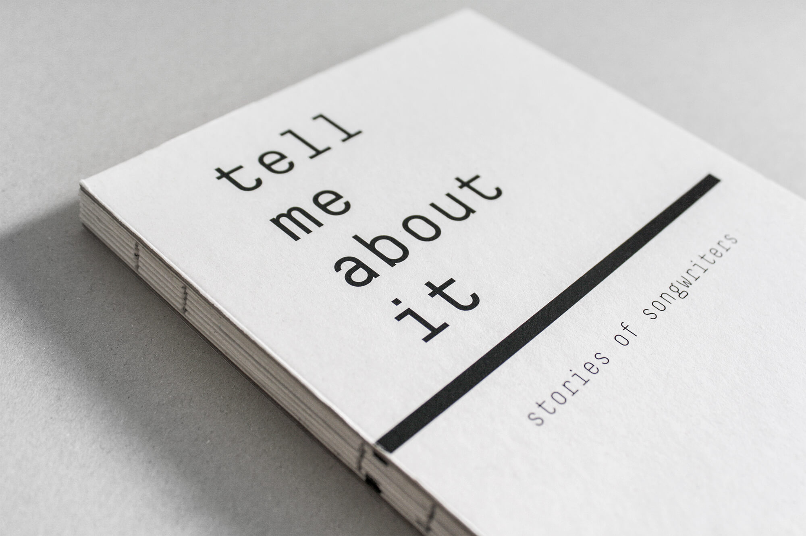
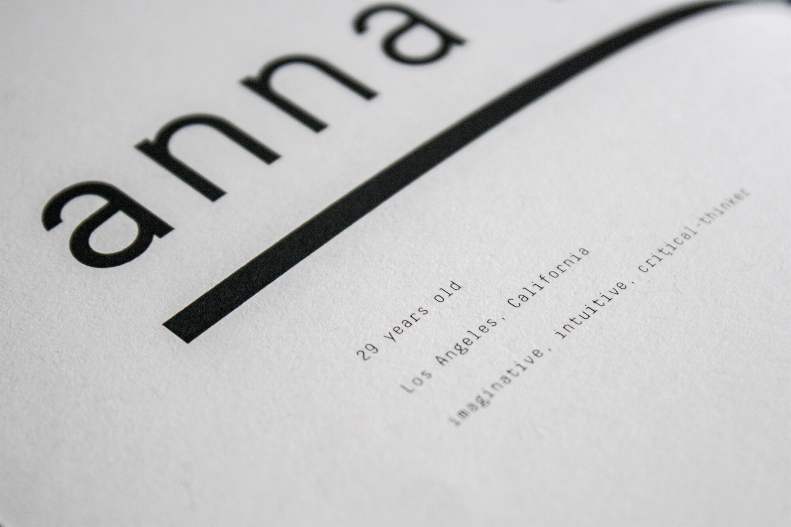
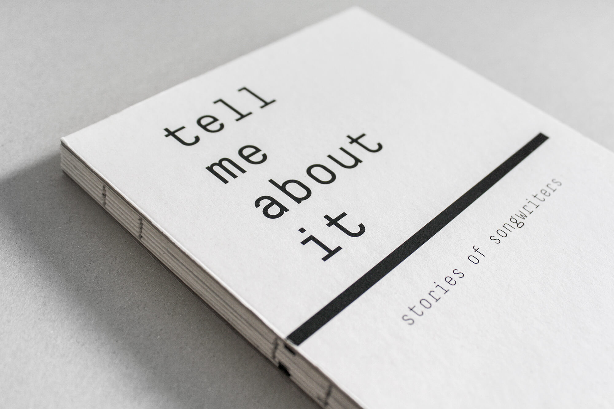
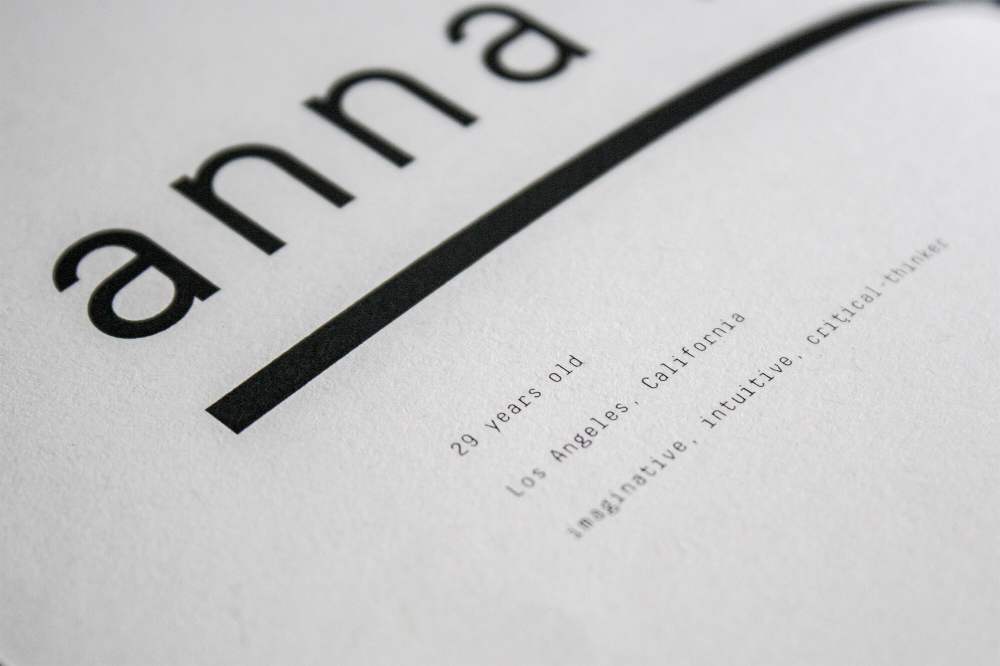
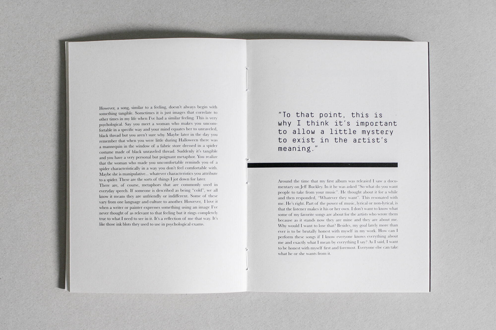
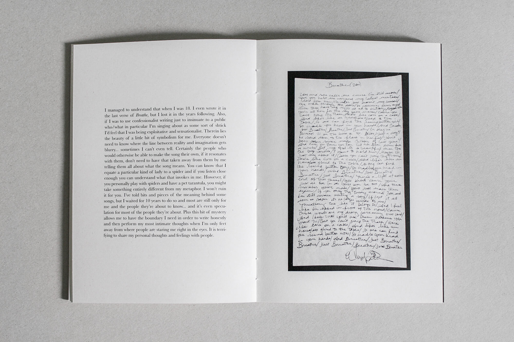
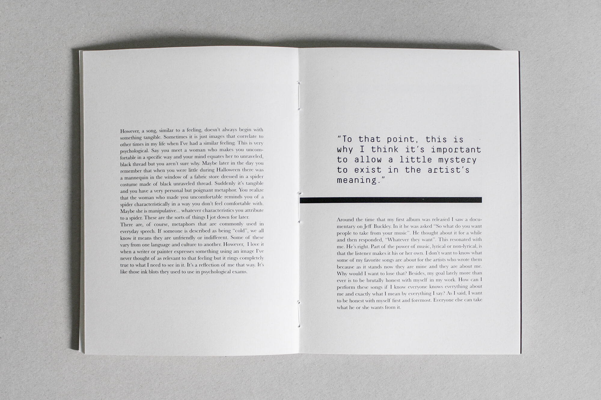
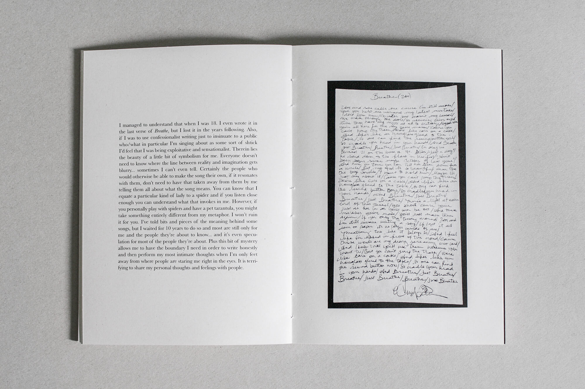
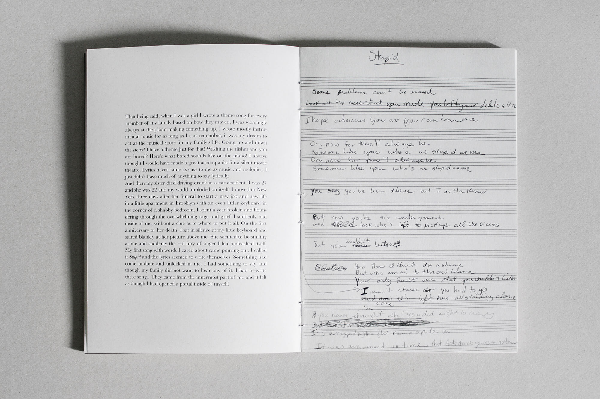
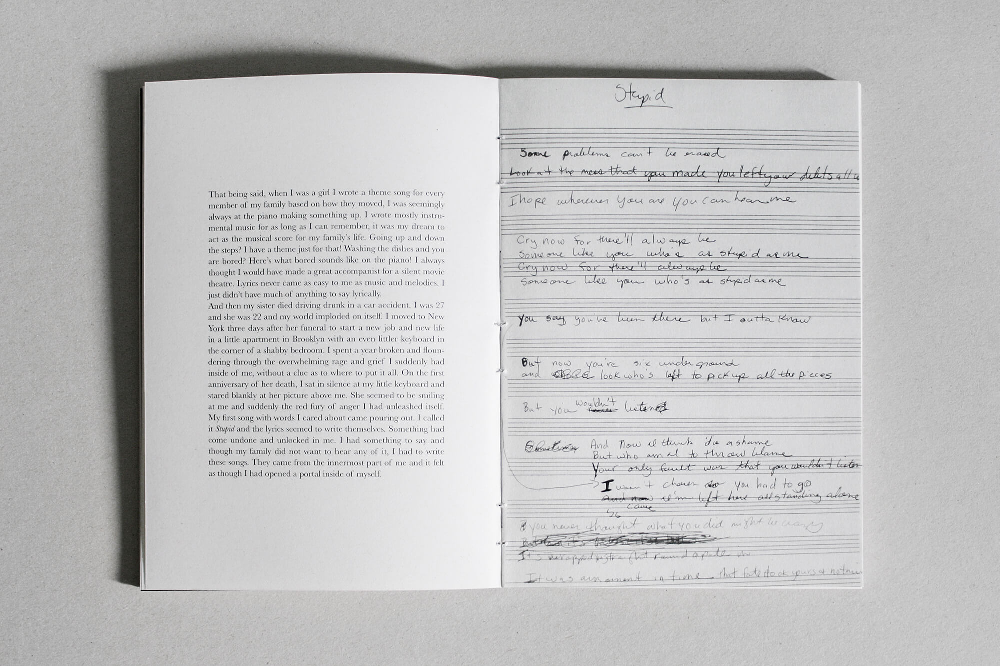

Tell Me about It: Stories of Songwriters
2014 /Editorial Design /Master's Degree Work
This project aims to explore the vision of singer-songwriters. Sometimes people listen to music just to pass the time or merely as a distraction, but music is much more than that. There are feelings behind a song that most of the time are ignored because people don’t give the proper attention to the lyrics. With this, I intended to explore all the development that exists behind a song. The process of writing a lyric, the stories that they hide, the decision of writing about a certain thing. Another consideration is the connection between music and art - what are the visual inspirations that might influence the songwriting process, and how do musicians get involved in the cover-design of the album/single? This is the opportunity for some artists to share their stories in a different and more personal way.
 



 





 



back to top